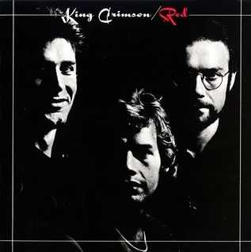
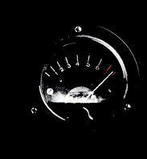
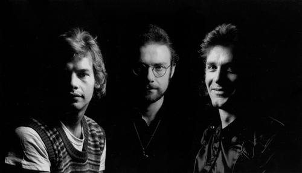

|

Red
(Rojo)
Grabado en 1974
Quedaron solo tres. Insuperable cierre de
otra etapa. El tema instrumental que da nombre al disco es un verdadero power-trio
y se convirtió en un himno del estilo crimsoniano; los acordes disonantes de la
guitarra provocan un clima especial, futurista; no llegó a ser tocado en vivo
por esta formación, pero sería retomado por futuras encarnaciones de KC.
Exquisito el tema Fallen angel, en el que Fripp graba por
última vez con guitarra acústica para un disco de KC. El
instrumental Providence es una
excelente improvisación en
escena remezclada en estudio; representa el resultado final de lo que comenzó
con la parte improvisada de Moonchild en el '69, pero con más agresividad: los
participantes van buscando y buscándose, cada uno por su camino, hasta
encontrarse y encontrar la comunidad; esto era propio y común de esta
formación, se reflejó en sus dos discos anteriores (especialmente en
"Starless and Bible black"), pero con esta pieza
lograron el grado más alto en este aspecto. La primera mitad de Starless es
magnificiente; luego,
la guitarra taladra el cerebro; en el final, la apoteosis en fusión jazz-rock.
En cierta forma, este disco es una síntesis de la historia de la banda hasta
ese momento, y esto se refleja también en sus importantes invitados: McDonald
había sido miembro fundador en el '69; Collins participó de la banda entre el
'70 y el '72 grabando 3 discos; y Miller y Charig habían tocado como invitados
en los discos "Lizard" e "Islands".
Formación de la banda |
Temas |
| Robert Fripp: guitarra y melotrón |
1 - Red 6'16 instrumental |
| John Wetton: bajo y voz |
2 - Fallen angel (Angel caído) 5'58 (letra) |
| Bill Bruford: batería y percusión |
3 - One more red nightmare (Una pesadilla roja más) 7'07 |
| |
4 - Providence (Providencia; nombre de la ciudad de USA donde
improvisaron este tema en vivo) 8'06 instrumental |
| |
5 - Starless (Sin estrellas) 12'18 |
Músicos invitados: David Cross (violín en Providence), Mel Collins (saxo
soprano en Starless), Ian McDonald (saxo alto en One more red nightmare
y en Starless), Robin Miller
(oboe en Fallen angel), y Mark Charig (violonchelo en Starless
y corneta en Fallen angel).
Wetton compuso la letra de One more red nightmare.
El resto de las letras es de Richard
Palmer-James.
Música:
- tema 1: Fripp
- temas 2 y 3: Fripp y Wetton
- tema 4: Cross, Fripp, Wetton, Bruford
- tema 5: Cross, Fripp, Wetton
Notas
-
La primera parte de Starless, cantada, se creó para
el album anterior con el nombre Starless and Bible black, pero no fue usada en ese momento. Solo quedó su nombre para titular el
disco y una improvisación que se incorporó. Resurgió poco después para
tocarla en vivo,
agregándosele una parte media de base percusiva de Bruford muy al estilo
Muir con un punteo minimalista in crescendo de Fripp encima, y una parte
final de potente fusión jazz-rock (en la versión de estudio para este
album, en esta parte final los saxos de Collins
y McDonald se desatan). Se abrevió el nombre de la pieza porque el título completo
original había sido usado.
-
Cross había dejado de ser miembro del grupo luego del último recital del
1ro. de julio del '74 en Nueva York. En el album, grabado en julio/agosto, aparece como invitado porque se
remezcló y se incorporó el tema Providence (improvisado en la
ciudad homónima el 30 de junio del '74 durante la gira por USA), pero no participó en ninguno de los
temas grabados en estudio,
ni siquiera en Starless, del cual es coautor y se venía
tocando en vivo (en la versión de estudio, la guitarra y los saxos hicieron las
partes del violín).
-
Como Cross era del grupo cuando se grabó en
vivo su participación, fueron 4 los invitados a grabar en estudio con la banda.
“Un quinto músico invitado, que compuso las partes de violonchelo en Red
y la apertura de Fallen Angel, nunca fue acreditado. A pesar de los
rumores que sugerían que Wetton, o incluso Mark Charig, compuso las partes, en
realidad fue un músico reclutado entre los músicos clásicos que frecuentaban
el Estudio Uno de Olympic, aunque su nombre sigue eludiendo la memoria.”
(*)
-
Luego de la grabación, McDonald fue invitado
a unirse al grupo como
miembro permanente en reemplazo de Cross, pero antes de que el nuevo cuarteto comenzara a ensayar para
tocar en vivo, en octubre de ese año Fripp decidió poner fin a la historia de
King Crimson (reportaje a Fripp). “Lo que
Bruford y Wetton desconocían en ese momento era que Fripp, cuatro días
antes de la grabación de Red, había conocido la obra del místico inglés
J.G. Bennett y había experimentado un despertar espiritual comparable al
experimentado por Jamie Muir dos años antes. Fripp comenta: ‘Hubo cosas
sucediendo durante el proceso de grabación que no creo que John y Bill
conocieran’. Como Fripp se había encerrado en sí mismo, sumido en un
estado de confusión, Bruford y Wetton tomaron la mayoría de las decisiones
sobre el contenido final. ‘Es un milagro que el álbum se hiciera’,
recuerda Bruford.”..."Seguramente no es casualidad que la decisión
de Fripp de retirarse de la industria musical se tomara en un momento en el
que había tenido menos de seis meses de descanso en tres años. Sin
embargo, el factor más importante en su decisión se produjo tras encontrar
los escritos de J.G. Bennett, escritor inglés y devoto del místico ruso
G.I. Gurdjieff. La obra de Bennett tuvo un impacto profundo e inmediato en
Fripp. 'Cuando encontré a Bennett en julio de 1974, me quedé atónito. Sabía
que tenía que ir a la Academia Internacional de Educación Continua de
Sherborne y abandoné mi carrera —ya que Crimson estaba a punto de
triunfar enormemente en Europa— para hacerlo. No fue producto de una
reflexión meditada: fue el reconocimiento inmediato e instantáneo de una
necesidad personal'.” (*)
-
Una variación no utilizada de la sección
central de la canción Red finalmente vio la luz en el album THRAK de
1995, más de dos décadas después, como la sección central del
instrumental VROOOM VROOOM.
-
La
base de guitarra del estribillo de Fallen angel había sido base de una
improvisación durante la primera presentación de esta formación en octubre
del '72 en Frankfurt (en ese momento era quinteto).
-
El riff de One More Red Nightmare
fue utilizado anteriormente por Wetton y Fripp en varias improvisaciones en
vivo a lo
largo de 1974, por ejemplo en el tema The Golden Walnut (tocado en
Toronto el 24 de junio).
-
 Por única vez en la historia del
grupo una
portada muestra una foto de sus integrantes. En realidad es una foto-colage,
porque las fotos fueron individuales. En la contraportada se editó una
imagen de un marcador de nivel, apareciendo en rojo desde el número 7 en
adelante, y con la aguja entre el 7 y el 8. Este disco era el séptimo album de la
banda en estudio. “Durante la mezcla, el grupo discutió ideas
para posibles portadas. Mientras sonaba la música, las agujas de los vúmetros
de la mesa de mezclas rebotaban y se estrellaban con fuerza contra el rojo.
Para Wetton, parecía simbolizar hacia dónde se dirigían con la música y,
durante un tiempo, esta imagen se consideró una idea sólida para una
portada. Sin embargo, la confianza era tan alta que EG pensó que sería
bueno «ponerle rostro al nombre» con un retrato grupal, el primero de este
tipo en adornar una funda de Crimson. La idea era que esto ofrecería a los
minoristas estadounidenses una imagen más comercial.” (*)
(*): Sid Smith,
de su libro In the court of King
Crimson

Primera edición grupal de las fotos tomadas en la "sesión
Red"
para la tapa del disco.
En la edición final se puso a Wetton del otro lado,
en espejo.
|
 Red
Red